I dreamed of Mariupol not being destroyed vol.2
AS FAR AS THE EYE CAN SEE - Lawrence Weiner
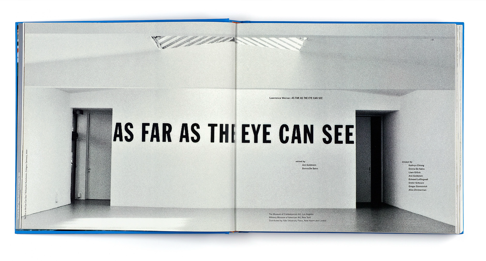
A pedestrian plaza in the heart of Mariupol.
It expands its influence onto the main city axis – Myra Avenue.
Axis creates a link with Teatral’na Square & Mariupol City Administration.
It spreads even further – across streets to sea waterfronts.
It reconnects the city center with its main asset – waterbank.
It can be even said that it reconnects to the values as well.
Requiring to eliminate the noise and non-essential.
The design emphasizes the importance of the void.
It uses standardized materials for all surfaces – horizontal, vertical.
It recognizes the value of the built environment.
It recognizes the importance of living a meaningful life within one’s community.
It becomes empty and public and space.
It spreads inside the building because the void is contagious.
But do we want it to be only empty and public and space?
The public square is inevitably associated with democracy.
Though democracy is power of the majority...
‘Public space is designed for the public. But does the word “public” represent everyone?’ - koozarch
The void can belong to everyone as everyone can fulfill it with their own senses, thoughts, opinions, visions, ideas, values, Christmas markets, installations, events, concerts, playgrounds...
And it becomes an opportunity to tell a story about all of it.
We even make it political.
Because democracy is a value.
Because politics is inclusive.
And politics is about values.
DESIGN PRINCIPLE: ELIMINATION OF NON-ESSENTIAL
Current situation / Creation of void and production of space:
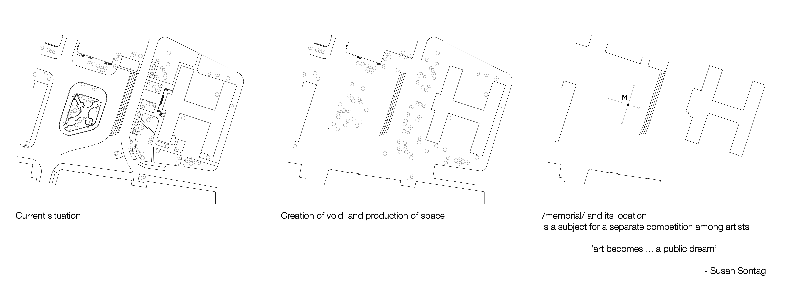
AND PRESERVATION OF THE VOID
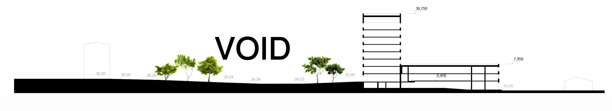
NEW CITY VIEWPOINTS & PUBLIC SPACE EXPANSION
“We still build all kinds of buildings on the ground, but the relationship of humankind and the ground has become rarified, and it has become more difficult in our daily life to feel the presence of the Earth. One reason could be the arrival of the aforesaid sky-scrapers, but even in small houses we can lose this former sense of clinging to the ground. I think a more fundamental reason is that we have treated the ground line and the skyline as external aspects of construction, since buildings divide one horizontal line into two lines: the ground and the sky. Without realizing it, we have seen those two lines just as separate building tools, and we have forgotten that they were originally one single horizontal line in the earth.” *7
New city viewpoints at the square are represented by lens street periscopes by the example of Craig Barrowman project for Peacock Visual Arts for their programme Defining Place: Architecture in Scotland 2004-2006. They are fixed on movable platforms and operated along old tram rail ways.
New city viewpoints are an interactive playground for children and families. They allow to observe a city in a different way and open view to the sea. For the square where once harbour and docking ships were seen in the past such installation is an opportunity to reconstruct its original viewpoints.
Lens periscopes are a subject for school reuse/recycle/readapt workshops where kids can work on the project of assembling lens periscopes from materials that otherwise could have been damped on the landfill.
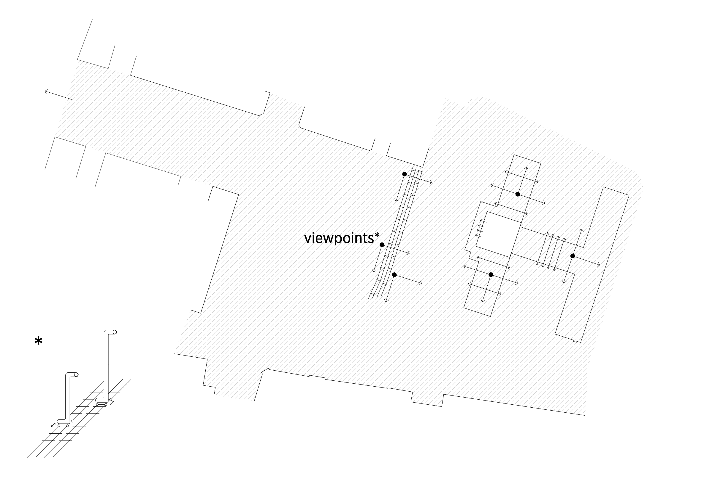
CITY MASTERPLAN AMBITIONS. PEDESTRIAN AXIS & ITS EXPANSION TO WATERFRONT.
Heavy industry co-exists with seaside recreation and tourism. Green belt protects the city from the majority of industrial facilities on the east bank.
Green waterfront belt includes part of the industry which gives impulse for its sustainable development and sea harbour becomes vastly accessible for public, commerce and recreation.
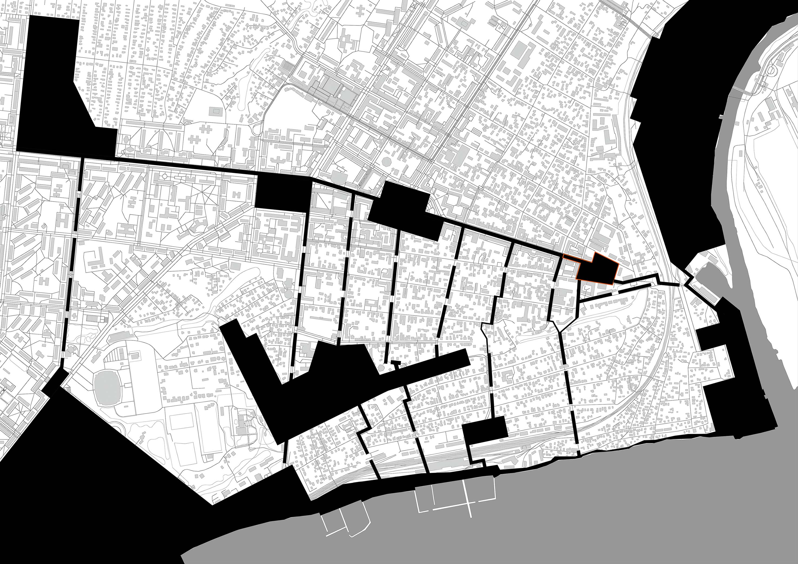
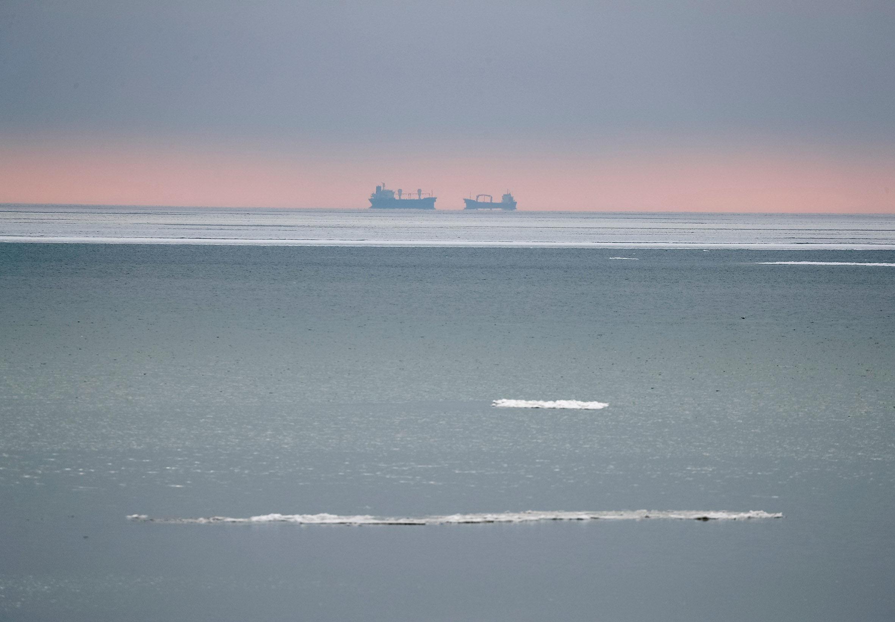
MASTERPLAN. SCALE 1 : 1 500
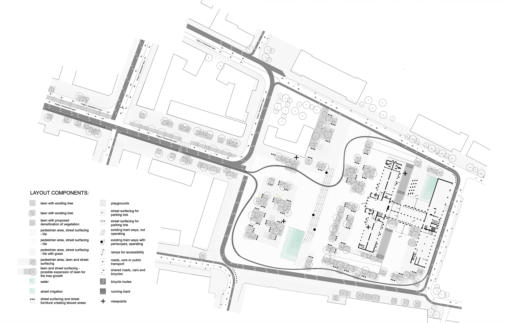
ADAPTIVE ZONING SCENARIOS
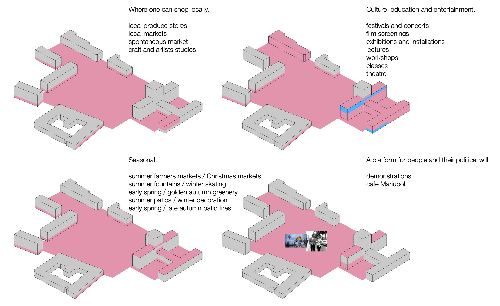
NEW CITY COMMUNITY CENTER ZONING & SPACE REORGANIZATION
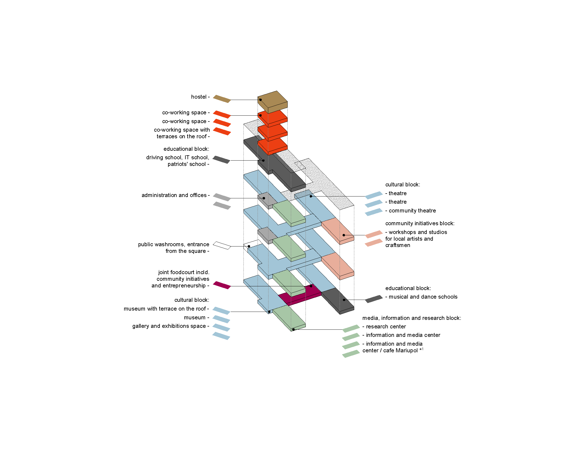
POLITICAL AMBITIONS
Vyzvolennya Square is a plaza situated in the heart of the city of Mariupol, flanked by the community center building municipal theatre and cafes, and creates a pedestrian axis with Teatral’na Square and Mariupol City Administration.
The design emphasizes the importance of a void, which opens a panorama towards the city skyline.
An urban stage and an interactive open space, the 12.250 sq.m square.
The “city’s stage” is as a void and a place for everyone. Being an empty space it can be fulfilled with everything that city and its dwellers need - new visions, new ideas, new opinions, values, festivals, markets, installations, events, concerts, children’s games. And this place is an opportunity to tell the story about all of this.
Everything that remains is an empty public square.
But do we want it to be only public?
Public square is inevitably associated with democracy. Though democracy is power of majority...
‘Public space is designed for the public. But does the word “public” represent everyone?‘
‘So the argument we made is that we should design a more inclusive public space not only for the majority of people but also small groups of individuals we always ignored.‘ - koozarch
Void can belong to everyone as everyone can fulfill it with their own senses, thoughts, opinions, values.
Place for everyone opens a possibility of equality, an essential right.
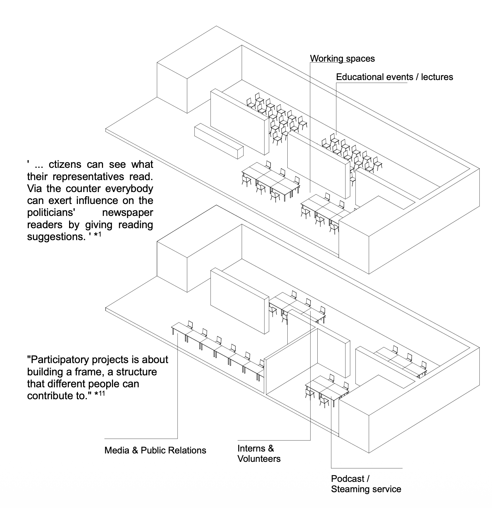
CAFE MARIUPOL is a workplace for newspaper readers. ‘ They put together the up to date “state” which includes all press information that is significant for a special person or group and their decisions. At the same time [it is] a public cafe, where one has access to ... international newspapers from all over the world as well as the “states” for the politicians which had been assembled at the cafe.’ *1
“... Buildings which are able to make ‘city’ without being iconic. This seems to be a contradiction these days. What is increasingly in demand is buildings which iconographically represent something. Whether or not they work in the context of the city is another story. This is usually achieved better by less ‘remarkable’ structures.’ *1
Proposed program can be challenged in terms of relevance to the city as it is in the process of defining its future strategy. What can be achieved is a maximum of free and flexible space that can be fulfilled according to city dwellers’ demands with minimum interventions. The program can change over time as the structure will stay relevant.
SUSTAINABLE CONSTRUCTION WASTE MANAGEMENT
Local recycling and production from “trash” materials gives an opportunity to purchase affordable products with a warranty, and create jobs.
All can be low tech, affordable, strong and locally repairable. The whole construction and recycling process on-site and supporting temporary site laboratory can impulse creation of jobs in science field.
All the reclaimed construction and demolition material that is not possible to reuse in production of new construction materials for the site should be utilised as a secondary raw material on site or in other fields of construction.
Long-term positive impacts from reusing/recycling/ readapting of CDW:
- sustainable development
- minimized impact on the environment
- optimizing the use of natural resources
- increasing restrictions on the dumping of reusable material, possibly leading to a ban on their disposal into landfills
- potential economic incentives to encourage the recycling and re-use
- conserves natural resources as raw materials and water
- reduces CO2 emissions in certain cases
- saves landfill space
- creates employment
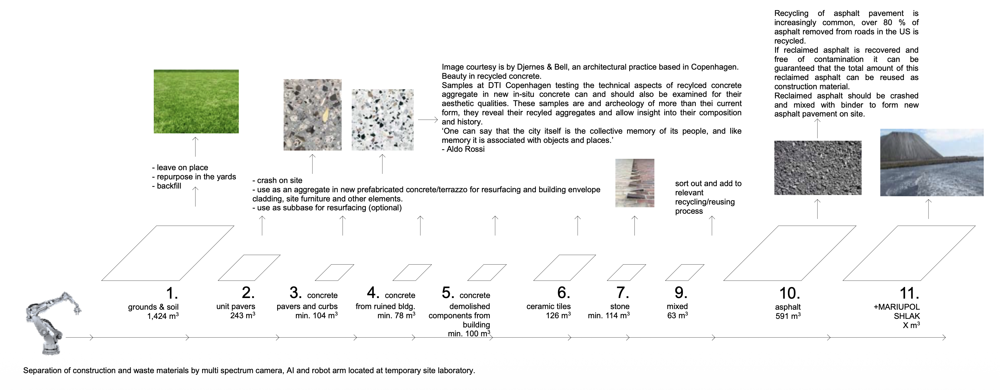
UNIFICATION OF MATERIALS USED, BOTH FOR VERTICAL AND HORIZONTAL SURFACES, ENHANCE THE SENSATION OF THE VOID ACQUIRED
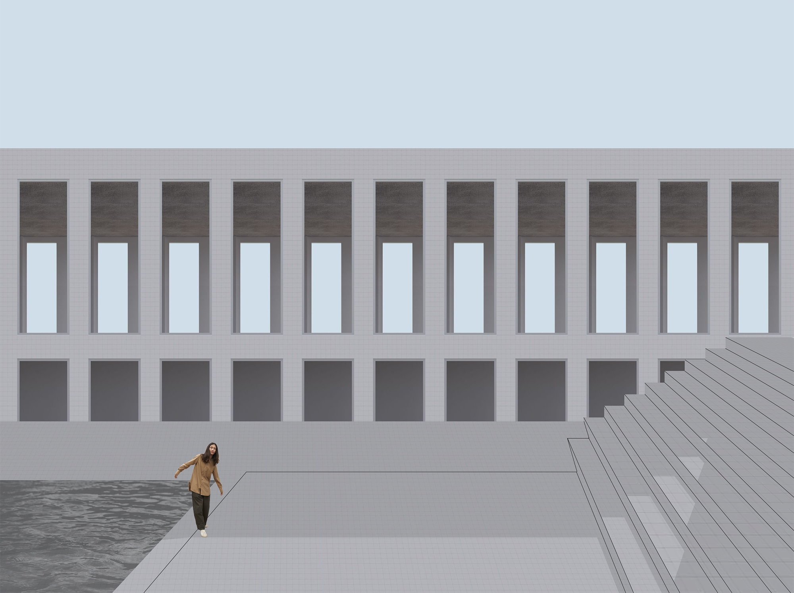
PUBLIC SPACE IN ACTION
We don’t use images “because we are so used to just watch pictures. But the picture never reveals architectural experience... Architectural space can also be something that you can describe in words... It doesn’t mean that the space is good because it looks good in pictures. It’s something we are so a custom to, we are so used to it... We switch through architectural reviews and look at the pictures, but this is just a translation.” *2 “Maybe this is a general problem of architecture, which is increasingly image-oriented. People no longer seem to ask themselves what kind of spaces are created by that. It becomes obvious when you look at contemporary publications: they hardly show plans and sections anymore. There are images that look good but they don’t give you the chance to see if the building is actually good or not.
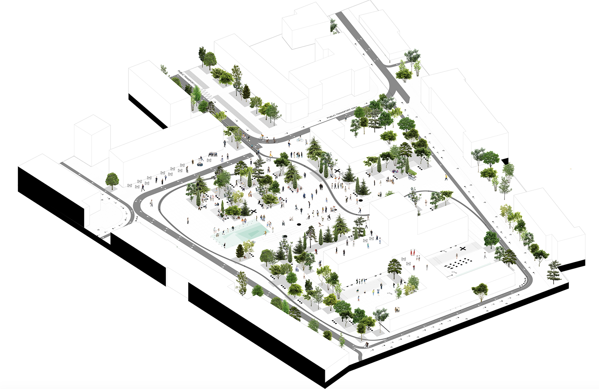
Things that function as a trademark or an image have to be questioned according to their architectural, e.g. their spatial, value... I would like to concentrate on creating specific qualities, sketching a vibrant part of a city, and not reduce myself to the creation of an image... Drawings don’t allow a lot of cheating.”
“The reason why many buildings are only designed with regard to their image is most likely the fact that the majority of paeople are only going to perceive them in the form of images, via the media. The actual user in that case is in the back seat.” *3
EXTERIOR VIEWS
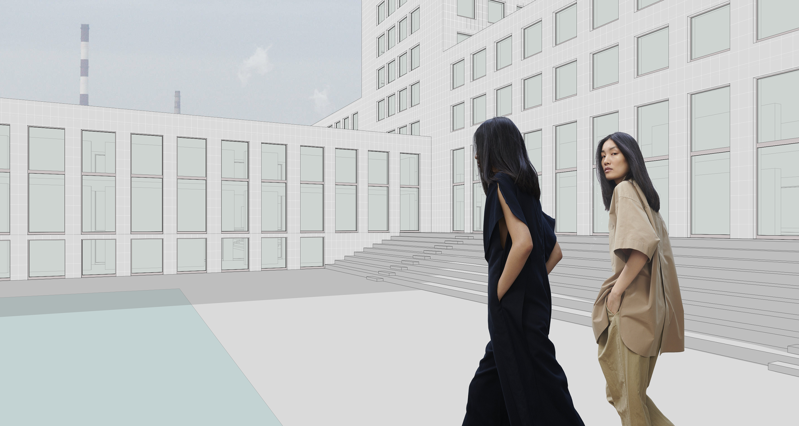
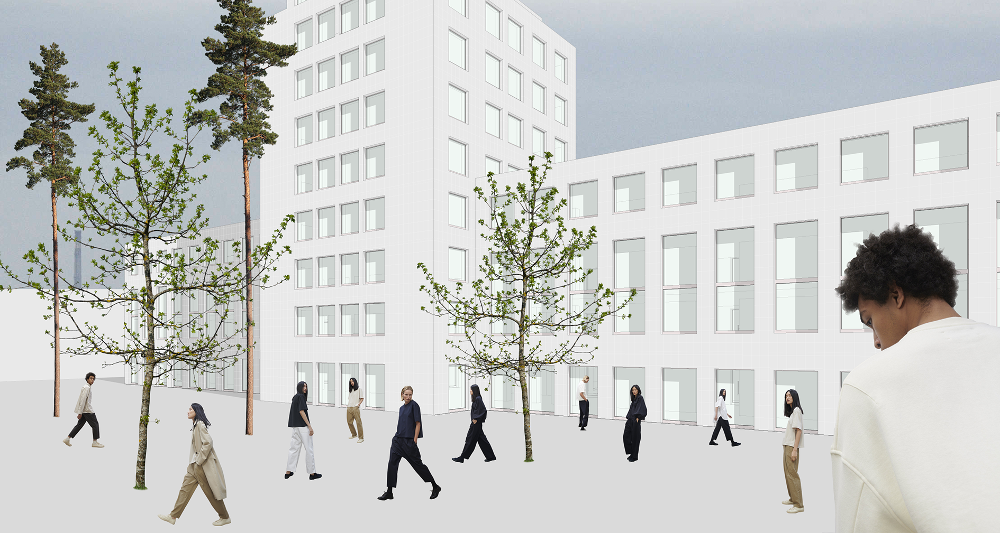
This project was done before the large scale invasion of Ukraine by Russia. This is how the site looks like now:
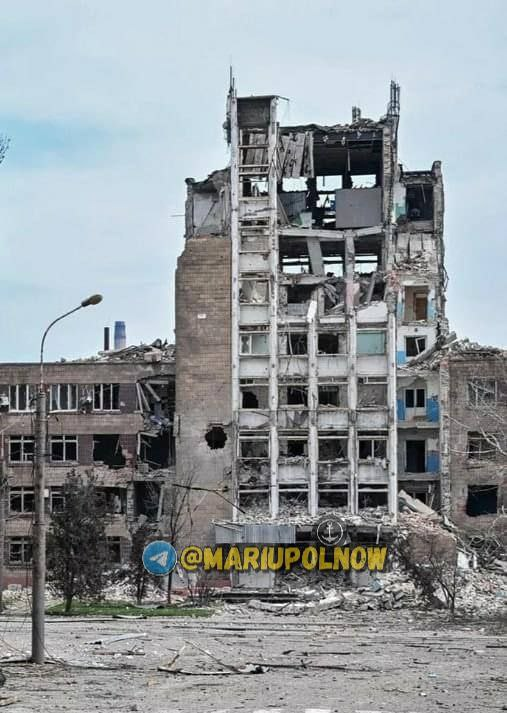
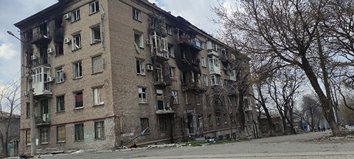
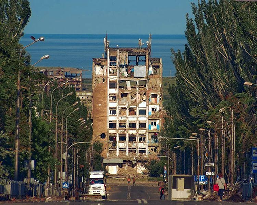
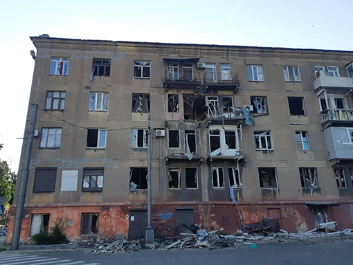
BIBLIOGRAPHY:
*1 - Something Fantastic. “A Manifesto by Three Young Architects on Worlds, People, Cities, and Houses” by Julian Schubert, Elena Schutz, Leonard Streich; published by Ruby Press, 2nd edition, 2011.
*2 - from lecture by Christian Kerez at the Centre for Fine Arts, Brussels, 24.10.2017.
*3 - from conversation with Bettina Kraus by Something Fantastic (Julian Schubert, Elena Schutz, Leonard Streich) published in “A Manifesto by Three Young Architects on Worlds, People, Cities, and Houses” by Ruby Press, 2nd edition, 2011.
*4 - Lawrence Weiner: As Far As the Eye Can See. The Museum of Contemporary Art, Los Angeles, and the Whitney Museum of American Art, 2007
*6 - research and development project by Djernes & Bell together with DTI Copenhagen - Aesthetics, culture & the sustainability of concrete: The role of architects & design in the development of sustainable visual concrete.
*7 - Two Lines Drawn in the Ground - Go Hasegawa ‘Teopanzolco Cultural Center: Isaac Broid + Productora’, Arquine, Mexico City, 2019
*9 - Blueprint for Autonomous Urbanism by NACTO, 2nd Edition
*10 - Global Street Design Guide by NACTO and Global Designing Cities Initiative
*11 - from conversation with Markus Miessen by Something Fantastic (Julian Schubert, Elena Schutz, Leonard Streich) published in “A Manifesto by Three Young Architects on Worlds, People, Cities, and Houses” by Ruby Press, 2nd edition, 2011.
designed & built by masha vakula